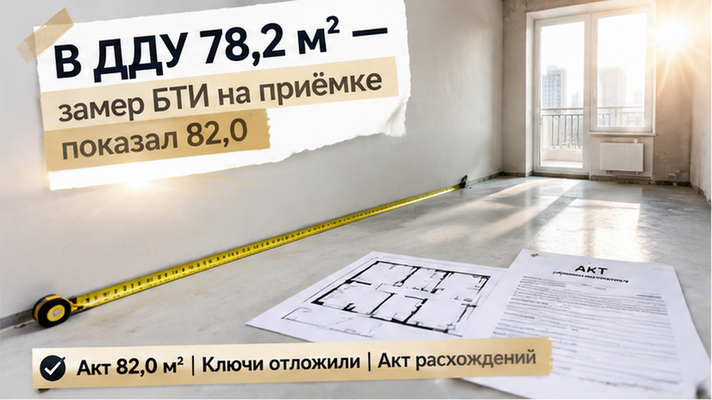
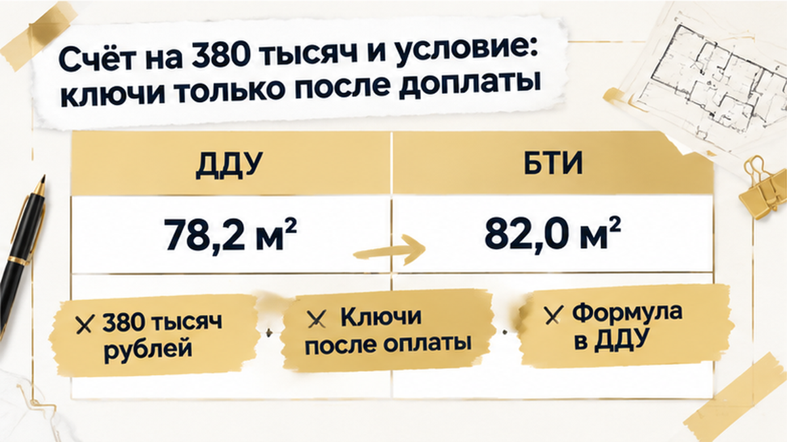
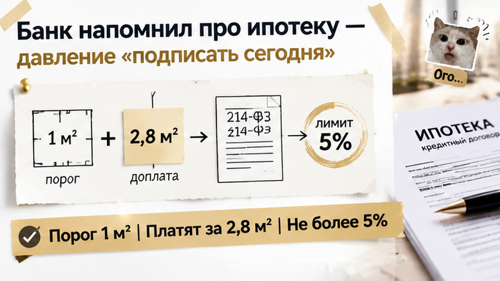
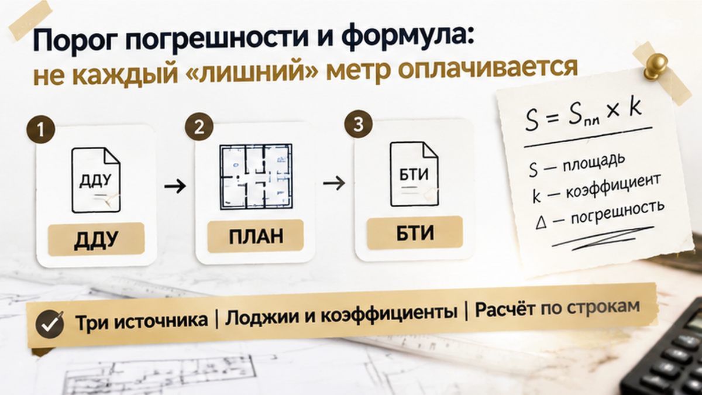

Семья с двумя детьми приехала за ключами от трёшки в тюменской новостройке — уехала без них: обмер БТИ добавил 3,8 м², застройщик выставил счёт на 380 000 ₽, ключи только после оплаты. Акт в тот день не подписали, ключи отложили до сверки с договором. Квартиру брали по ДДУ в ипотеку, деньги лежали на эскроу, дом сдан, в коридоре ещё пахло свежей штукатуркой. Специалист с обмером назвал цифру, которой в договоре не было. Через несколько минут менеджер положил на стол расчёт доплаты.
Если у вас приёмка на этой неделе и в акте появились «новые» метры, напишите в Telegram или в MAX. Посмотрим цифры до подписи.

В договоре стояло 78,2 м². С этой цифрой семья проходила одобрение ипотеки, открывала эскроу и пересчитывала каждый платёж.
Обмер БТИ показал 82,0 м². Разница +3,8 м², это около 4,86%.
В заголовке я округлил до четырёх метров. В документах так нельзя: каждая десятая доля метра потом превращается в рубли.
Обычный человек слышит «квартира стала больше» и почти радуется. Я в этот момент спрашиваю другое: а что про это написано в вашем договоре?
Закон о долевом строительстве (214-ФЗ, ст. 9) разрешает договору допускать изменение площади не более чем на 5%. Но из самой этой цифры не следует ни «обязаны доплатить», ни «можно расторгнуть». Платить или нет, решают формула и порог погрешности в вашем конкретном ДДУ.
На глаз квартира не выросла. Выросла цифра в бумаге, и ровно на пороге ключей.
Поэтому первым открывают договор, а не калькулятор. Как сверять ДДУ до любых денег, я разбирал на другой тюменской истории, где застройщик сменил юрлицо, а дольщикам прислали новый ДДУ.

Итог расчёта: 380 000 ₽ до выдачи ключей, около 100 000 ₽ за метр. Это не рыночная цена метра по Тюмени. Такая ставка имеет смысл, только если она прямо следует из этого ДДУ.
Условие прозвучало коротко. Акт и ключи либо после оплаты, либо после того, как семья согласует новую площадь в акте.
Второй вариант звучит мягче. По сути он жёстче: подписав акт с 82,0 м², семья своей рукой соглашается с цифрой, от которой и считают доплату.
Чего на столе не было: построчного расчёта, сколько из 3,8 м² идёт под оплату, а сколько укладывается в погрешность. Не было сверки с планом из договора. И никто не сказал, какую площадь мерили: общую или приведённую, с коэффициентом за лоджию или без.
«Так застройщик что, обманывает?» Не обязательно.
Во многих типовых ДДУ есть формула: метры сверх порога умножают на цену метра из договора. Если формула прописана и расчёт ей соответствует, требование может быть законным.
Но проверяется это по бумаге. Не на слух, не в пустой квартире, когда дети ждут в машине, а в телефоне висят непрочитанные сообщения.
Одно из них, как выяснилось через полчаса, было от банка.

Пока семья перечитывала счёт, мужу позвонили из банка, где оформлена ипотека. Сотрудник вежливо напомнил: пока передаточный акт не подписан, ипотечная сделка до конца не закрыта.
Теперь давили с двух сторон. В коридоре менеджер с готовым счётом, в трубке банк со словом «надо».
Я много раз видел этот момент на приёмках в Тюмени. Человек стоит в почти своей квартире, дети просятся домой. Никто не говорит «платите немедленно». Говорят мягче: «Давайте сегодня закроем, чтобы всем было спокойно».
Так и подписывают акт с новой площадью, не сверив её с договором.
«А если банк потом что-то предъявит?»
Что банк требует после ключей и в какие сроки, написано в вашем кредитном договоре, а не в звонке. Условий этого банка я не знаю и придумывать не буду. Но сам звонок ни к чему не обязывает. Если в договоре есть срок для документов, попросите прислать его письменно и посчитайте, сколько дней у вас на самом деле.
Как ипотека связана с этапом до ключей, я разбирал в истории, где семейную ипотеку на новостройку одобрили, а эскроу не открыли. Правило то же: сначала документы, потом подпись.
Семья ответила банку спокойно: приёмка идёт, площадь расходится с ДДУ, пришлите требования по срокам на почту. После двухминутного разговора половина давления ушла. «Сегодня» оказалось чьим-то удобством, а не условием договора.
Менеджер положил на стол у окна передаточный акт с цифрой 82,0 м², а рядом счёт.
Семья акт не подписала.
Скандала не было, от квартиры никто не отказывался. Это была пауза, и закон её допускает. По ст. 8 ч. 5 214-ФЗ до подписания передаточного акта дольщик вправе потребовать составить акт о несоответствии и не подписывать передаточный, пока вопрос не решён. Детали зависят от условий конкретного ДДУ.
Дальше было сорок минут спокойной работы. Семья записала расхождение на бумаге: 78,2 м² по ДДУ против 82,0 м² по обмеру БТИ, разница +3,8 м². Попросила построчный расчёт доплаты: какие комнаты «выросли», посчитаны ли лоджии и с каким коэффициентом. Запросила данные обмера, поэтажный план и экспликацию, то есть таблицу площадей по комнатам, чтобы сравнить их с планом из приложения к ДДУ и проектной декларацией. И сфотографировала акт, счёт и комнаты, сняла короткое видео с рулеткой в спорных местах.
Ключи в тот день не взяли.
Обычный человек думает: «Возьму ключи, а поспорю потом». Риэлтор видит другое: ключи вместе с подписанным актом на 82 м² часто означают молчаливое согласие с новой цифрой. Спорить потом можно, но позиция уже слабее.
Похожую паузу я описывал, когда в ДДУ обещали чистовую, а на приёмке были голые стены. Спор другой, принцип тот же.
Менеджер резко не возражал и пообещал прислать расчёт. Квартира осталась за семьёй по договору, деньги на эскроу никуда не делись. А вопрос о 380 тысячах переехал из коридора на бумагу.
Если на приёмке площадь выросла на 4 м² и застройщик просит доплату 380 тысяч — вы подписываете акт в тот же день или останавливаете сделку до сверки с ДДУ? Напишите в комментариях, как поступили бы вы или как поступили на своей приёмке.

«Плюс четыре метра» в пустом коридоре звучит как приговор. Но платите вы по договору, а не по округлению.
По ст. 5 закона о долевом строительстве цену после подписания ДДУ можно менять, только если договор прямо это предусматривает и описывает условия. Нет такого пункта — нет и автоматической доплаты.
«А если пункт есть?» Тогда ищите в нём порог. В типовом ДДУ обычно прописана погрешность, которая не оплачивается: «1 м²» или «от 1 до 5%». Платят только за метры сверх порога и по цене метра из договора.
Посчитаем на этой квартире. При пороге 1 м² платить нужно за 2,8 м², а не за 3,8. Процентный порог считают от 78,2 м², то есть от площади по договору.
Теперь про сами 380 000 ₽. За 3,8 м² это 100 000 ₽ за метр. Такая цена законна, только если она взята из вашего ДДУ, а не из средней по Тюмени и не из сегодняшнего прайса. Эту строку расчёта я прошу показать первой.
И про пять процентов. +3,8 м² — около 4,86% площади, совсем рядом с границей ст. 9 214-ФЗ (не более 5%). Но «почти пять» ещё не повод для расторжения, и исход спора никто не гарантирует. Ответ дают текст ДДУ и проверенный обмер.
За столом с актами просите бумаги, а не обещания. Ст. 8 ч. 5 214-ФЗ позволяет до подписи передаточного акта потребовать акт о несоответствии и отложить подпись, пока вопрос не решён.
Сверяйте три источника: договор, обмер и счёт. Расхождение почти всегда прячется в одной из этих строк.
| Что сверять | В ДДУ | В обмере БТИ | В расчёте доплаты |
|---|---|---|---|
| Площадь | 78,2 м², план квартиры в приложении | 82,0 м², экспликация и поэтажный план | Разница 3,8 м² и откуда она взялась |
| Вид площади | Общая или приведённая | Какая именно измерена | Не сравнивают ли разные величины |
| Балконы и лоджии | Понижающие коэффициенты | Учтены ли с теми же коэффициентами | Не посчитана ли лоджия «в полный метр» |
| Места общего пользования | Не входят в квартиру | Не попал ли кусок общего коридора в обмер | Не оплачиваете ли вы коридор подъезда |
| Порог и цена м² | Пункт о погрешности и формула | — | Доплата только сверх порога и по цене из ДДУ |
Дальше всё просто. Возьмите обмер или техпаспорт, поэтажный план, экспликацию и построчный расчёт доплаты. Положите рядом план из ДДУ и проектную декларацию. Не согласны — впишите замечания в акт или составьте акт расхождений, сделайте фото и видео. Если цифрам застройщика не верите, закажите независимый обмер у кадастрового инженера.
Если ДДУ за время стройки меняли, сначала проверьте, какая редакция у вас на руках. Как это бывает, я показывал в истории, где застройщик сменил юрлицо и дольщикам прислали новый ДДУ.
Акт и расчёт доплаты на руках, а порог в ДДУ не находится? Пришлите пункт договора в Telegram или MAX, разберём формулу до подписи.
Та семья спор пока не выиграла и не проиграла. Она сделала главное: не подписала акт и не заплатила «на словах». Пауза до сверки дала ей контроль, а не новый риск.
Идёте на приёмку новостройки в Тюмени — возьмите с собой ДДУ. Найдите пункт о пороге и попросите построчный расчёт до того, как возьмёте ручку. Ключи можно забрать на несколько дней позже, а подпись под неверной цифрой назад не заберёшь.